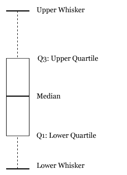
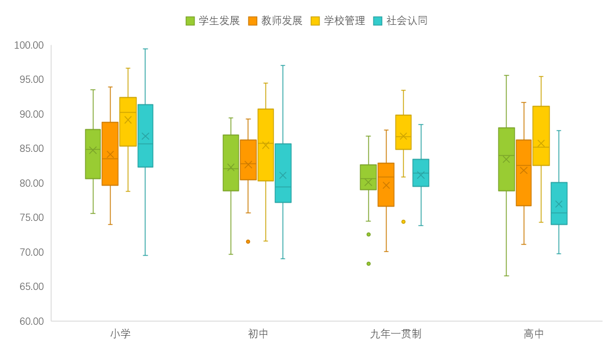
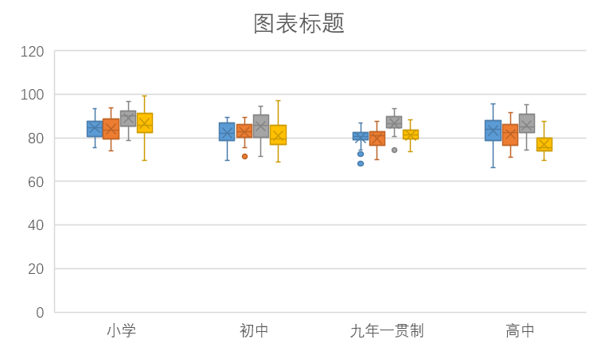
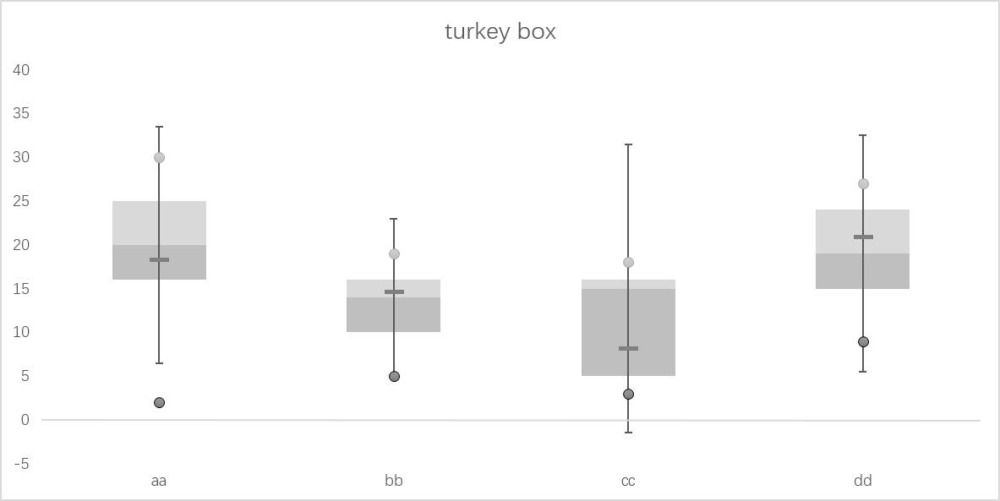
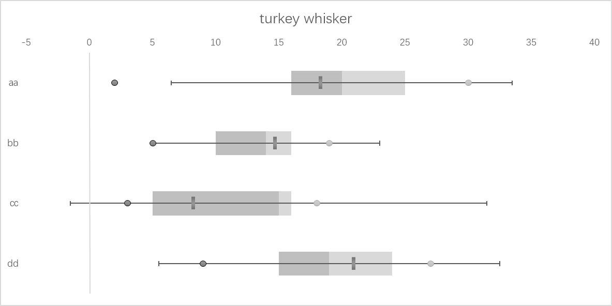
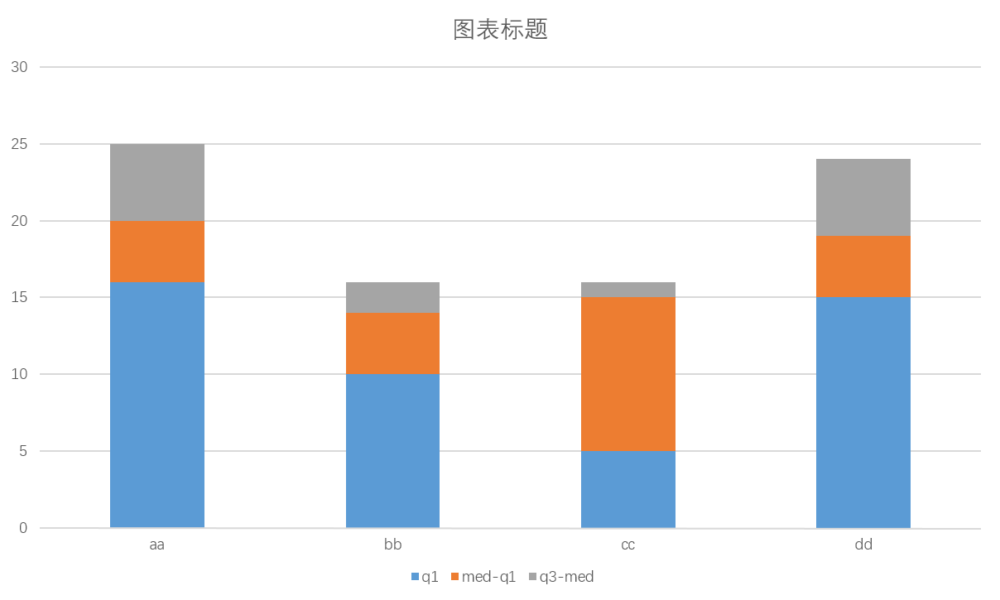
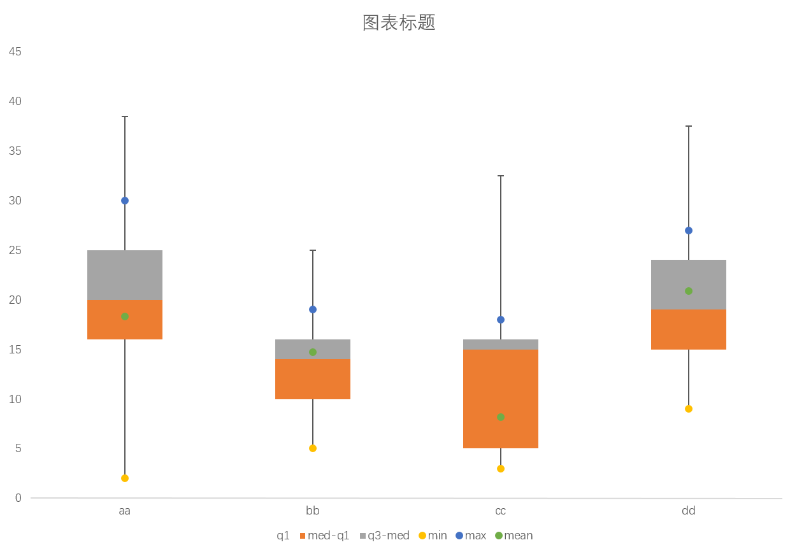

实在不想复制前面的首语，但是自己重新写好累啊啊啊啊啊啊啊...
算了，不起范儿了，直接进入主题Excel2016系列之——箱型图。
About Boxplot
箱型图的英文名为boxplot，是一种完美结合箱子和线条概念的图表。它还有一个兄弟图表，叫做胡须图，英文名为whiskerplot。两者的唯一区别就是：箱型图是竖着放的，胡须图是横着放的。（有没有一种梯子不用时请横着放的赶脚？）
要了解箱型图，首先可以先看看箱型图的图形。（其实挺烂大街的，一看就知道）

图1 箱型图示意是不是感觉很熟悉？我相信，一定有同学要开始不屑一顾了：我裤子都脱了，就让我看这个？
别急，那么我就要问了，你真的知道箱形图所有元素的含义吗？容我细细道来。
- Upper Whisker: 上胡须，也称上边缘。当数据最大值距离Q3超出1.5倍的IQR时，则为最大值，否则为Q3 + 1.5*IQR
- Q3:Upper Quartile: 上四分位数，即超过所有数据75%的数值
- Median: 中位数，即超过所有数据50%的数值
- Q1:Lower Quartile: 下四分位数，即超过所有数据25%的数值
- Lower Whisker: 下胡须，也称下边缘。当数据最小值距离Q1超出1.5倍的IQR时，则为最小值，否则为Q1 - 1.5*IQR
是不是看了就觉得都清楚了呢？其实还没完，还有些要解释的术语，有些在这张图里没有，但是在其他图上还是存在的。
- IQR: Inter-Quartile Range，有多种叫法，这里姑且称为四分位距。即Q3 - Q1的值
- Mean: 均值，即数据的算术平均数
- Max: 最大值，部分箱型图不考虑IQR，就直接用最大值代替上胡须
- Min: 最小值，部分箱型图不考虑IQR，就直接用最小值代替下胡须
- Outlier: 异常值，在箱型图中会以点的形式表现
上述10个名词都清楚之后，你才能真正理解箱型图！
是不是又有小伙伴觉得不过如此呢？那么我就要提问了：为什么IQR要取1.5倍？
这是有理论依据的！

是不是觉得特别神奇？如果数据服从正态分布的话，Q1 - 1.5*IQR的区间位置点正好在大约-2.7个标准差左右（因为对称，右边就不说了），这意味着，在所有群体中，大于这个值的点理论上涵盖了总体的99.65%的数据，接近于99.5%。
所以，统计思想无处不在！
Boxplot by Excel
是不是有点晕？么关系，理论讲完了,讲点实际操作的东西。
文章惯例：成品先出

图3 各A级指标评价结果具体来看图3，比较了两层数据，第一层是不同A级指标（见图例）的集中趋势，第二层是在不同A级指标下不同类型学校（小、初、九、高）的。具体结果就不讲了，给大家自由发挥的空间。
有木有觉得一股浓浓的Excel风？明显有种一看就是Excel做出来的。
回到主题，数据的组织大致如下。好吧其实完全不用组织（必要的数据转换还是要的，这个这里就不提了），只要表长这样就行：
| 学校类型 | 学生发展 | 教师发展 | 学校管理 | 社会认同 |
|---|---|---|---|---|
| 小学 | 85.55 | 79.65 | 90.24 | 84.46 |
| 小学 | 79.76 | 78.14 | 82.99 | 88.54 |
| 小学 | 79.28 | 76.98 | 84.58 | 82.02 |
| 小学 | 80.54 | 81.04 | 86.99 | 77.43 |
| 小学 | 86.31 | 78.53 | 91.25 | 85.67 |
| 小学 | 86.38 | 82.09 | 86.19 | 87.34 |
| 小学 | 87.74 | 84.08 | 92.35 | 91.35 |
| 小学 | 84.20 | 85.53 | 92.20 | 83.52 |
| 小学 | 83.84 | 87.79 | 92.31 | 81.77 |
| 小学 | 87.15 | 89.65 | 95.19 | 94.69 |
| 小学 | 90.98 | 88.97 | 90.62 | 98.49 |
| 小学 | 91.00 | 84.60 | 93.91 | 82.05 |
| 小学 | 78.89 | 77.96 | 85.36 | 82.49 |
| ... | ... | ... | ... | ... |
然后，全选，作图。然后，图就出来了...

图4 excel箱型图示例再然后，自己调调配色什么的就好了。也有些要注意的地方：
- 因为是直接选中所有数据，所以速度偏慢
- 在格式调整上相对困难
- 贴到其他地方的时候建议使用图片，毕竟目前只有2016支持，而且容易碰到小bug
所以，你以为这一期就这么结束了吗？NONONO，too naive。接下来，为了撑一下篇幅，进入Excel2016以前如何做箱型图的教程。
Boxplot by Excel2013
可以看到，Excel2015的箱型图确实强大，但是，由于是封装的关系，所以整体上不够自由。所以，这里教大家用Excel更自由地实现箱线图的方法。
为表诚意，先上成品：

图5 箱型图(Excel2013)
图6 胡须图(Excel2013)一下子两张图，诚意满满有木有？
图5是典型的箱型图，里面我做在传统箱型图的前提下做了一些改变：
- 区分了Q1到Median以及Median到Q3的色块
- 用短横线标记了数据的均值
- 线段统一采用Q3 + 1.5*IQR或Q1 - 1.5*IQR的形式，所以会有负值
- 最小值和最大值分别用圆点标记，
图6就是闻名不如见面的胡须图，参照了图5的制图方法，只是坐标系有所变化。（在具体细节上操作难度高于箱型图，请自行摸索）
要想做到高度自由化，就需要按照自己的方式组织数据，如下
| statistics | aa | bb | cc | dd |
|---|---|---|---|---|
| min | 2.00 | 5.00 | 3.00 | 9.00 |
| q1 | 16.00 | 10.00 | 5.00 | 15.00 |
| median | 20.00 | 14.00 | 15.00 | 19.00 |
| q3 | 25.00 | 16.00 | 16.00 | 24.00 |
| max | 30.00 | 19.00 | 18.00 | 27.00 |
| mean | 18.30 | 14.70 | 8.20 | 20.90 |
| q3-q1(IQR) | 9.00 | 6.00 | 11.00 | 9.00 |
| med-q1 | 4.00 | 4.00 | 10.00 | 4.00 |
| q3-med | 5.00 | 2.00 | 1.00 | 5.00 |
| 1.5*IQR | 13.50 | 9.00 | 16.50 | 13.50 |
| max-q3 | 5.00 | 3.00 | 2.00 | 3.00 |
| q1-min | 14.00 | 5.00 | 2.00 | 6.00 |
| y | 3.50 | 2.50 | 1.50 | 0.50 |
从表里可以看得出来，其实并没有做太多的工作，就是单纯地把一些重要的统计量计算出来了。（最后的y是什么？我只能说，如果你做胡须图，就一定会用到它）
然后，选中q1、med-q1、q3-med做堆积柱形图：

图7 箱型图雏形接下来怎么做就不用我说了吧？但是考虑到广大人民群众的感受，我就写个操作步骤。
- 选中q1的柱子，填充色取透明色
- 选中med-q1的柱子，填充色为深灰
- 选中q3-med的柱子，填充色为浅灰
- 添加误差线，删除med-q1的误差线，q1和q3各取负偏差和正偏差
- 偏差线的值取1.5*IQR
- 向图表添加mean、min、max三条带标记的折线图，线条设置透明色，
- 其他改动自己看着办...
这样就成图了：

图8 箱型图雏形改良自己做的好处在于所有的东西都是可掌控的，知道哪些地方是可改的。另外，也是很有可能激发创造力的。
结束语：这一期关于箱型图，试用了Excel2016的新增图表，也show了一下在之前版本里面怎么做柱形图，这里其实不得不强调一点：设置透明色绝对是作图の神功能！
最后的最后，呼应下标题。所谓这些家伙可以装箱的意思就是每个箱型图里面都装了50%的数据，如果是以人为对象，那么也就是50%的群体，那么剩下没有装进去的呢？一部分在线条里，另一部分就变成了异常值，他们可能是不合群的一些小伙伴们，或许就是我们所需要特别关注的对象。
Reference
Wiki:Box plot百度百科：箱形图